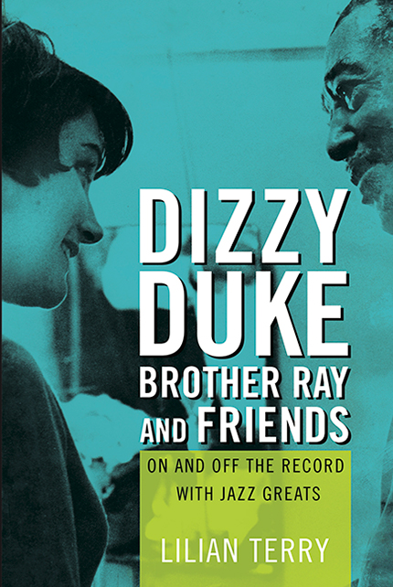

Published by the University of Illinois Press in November 2017
From the University of Illinois Press online catalog:
Lilian Terry has lived music. As a performer, she has shared the stage with Ella Fitzgerald and Nina Simone. She cofounded the European Jazz Federation and pioneered jazz education in Italy. Her work as a director-producer of radio and television programs has spread the music by introducing countless people to its legendary performers.
Drawing on Terry’s long friendships and professional associations, Dizzy, Duke, Brother Ray, and Friends offers readers a rare opportunity to hear intimate conversations with some of the world’s greatest musical figures. Dizzy Gillespie offers his thoughts on playing with “sanctified” rhythm and the all-important personal touch in performance. Duke Ellington discourses on jazz history and concludes an interview to sing a self-written ditty in Italian. Ray Charles gives candid thoughts on race and politics while taking charge of Terry’s tape recorder. Abbey Lincoln, Max Roach, Horace Silver, Bill Evans—all provide Terry and her readers with unforgettable . The result is a collection of profiles, some stretching over a decade or more, that reveal these performers in ways that illuminate their humanity and expand our appreciation of their art.
“Lively, well-written, and engaging. Lilian Terry has written nuanced portraits gained from the affection and trust these artists placed in her personally, as a professional in her field, as well as being a talented jazz singer. These writings uniformly go beyond these artists as stars to what makes them human. There is a lot of jazz history here."
"A jaunty memoir."
“Terry’s book illuminates the artistic outlooks and personal values of well-known jazz musicians. Much of this book’s uniqueness and appeal comes from the author’s trusted relationships with her subjects. They opened up to her in ways that they did not to conventional interviewers.”